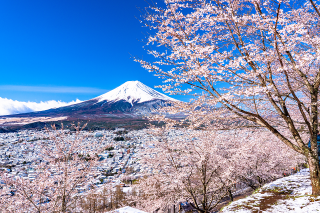
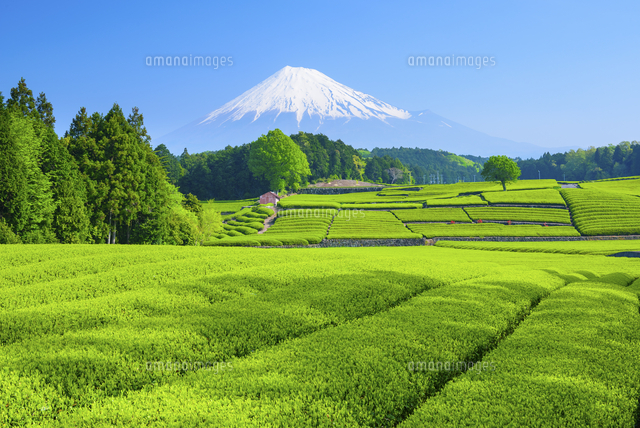

Mt. Fuji, Japan's tallest mountain, is a symbol of the country's natural beauty. Surrounding areas like Lake Kawaguchi offer breathtaking views and serene experiences for visitors.

Fig.1 - Mt. Fuji surrounded by blooming cherry blossoms.

Fig.2 - Japan’s largest tea fields spread out across the land.